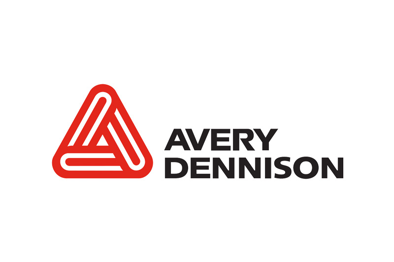

Organisaties, functies en technieken
Bijna elke organisatie heeft te maken met ICT. Denk aan een ziekenhuis, callcenter, fabriek, supermarkt, huisartsenpraktijk, middelbare school, pizzeria, kapperszaak, bioscoop, autogarage enzovoorts. In een ziekenhuis moet je denken aan een systeembeheerder, stel er gebeurt iets met een computer van een dokter dan kan hij z.s.m. ingrijpen. Callcenter spreekt voor zich neem ik aan en bij een fabriek zijn de operators als het ware een computer aan het besturen, een computer dat alleen maar in staat is om de snoepjes correct in te pakken bijvoorbeeld. Alle supermarkten gebruiken kassa’s die verbonden zijn met een netwerk, hier kan een data scientist goed mee overweg d.m.v. analyse van verkochte producten. Een softwareontwikkelaar die voor een huisartsenpraktijk een app maakt waardoor patiënten hun afspraken kunnen in zien. Hierbij wordt ook gebruik gemaakt van een consultant, die de tussenpersoon speelt tussen de ontwikkelaars en klanten.
Om dit allemaal te kunnen realiseren, wordt er veel gebruik gemaakt van technieken als SaaS, PaaS, IaaS en DaaS. Een mix van technieken is ook mogelijk. Nu er meer mensen in de Cloud werken worden deze technieken steeds bekender in het bedrijfsleven.
VAV:Divers en Avery Dennison
Helaas kon ik niet aanwezig zijn tijdens de bedrijvensafari, dus heb ik een vriendin en mijn oom gevraagd voor een gesprek over hun baan.
VAV is een grote speler tussen de groothandels en is gespecialiseerd in de versmarkt, zoals de slagerij, delicatessenwinkel, catering, horeca en supermarkt.
Manon werkt in een klein team aan de gehele database van producten. Zij zorgen ervoor dat alle producten up-to-date zijn en werken vooral met MySQL Workbench.
Zelf vind ik het niet bij mij passen, omdat het je vaak hetzelfde doet en geen diepgang in zit.
Avery Dennison is een grote speler in de tag en label industrie. Denk aan labels aan kleren in de winkel, die ervoor zorgt dat de poortjes piepen wanneer je niet hebt afgerekend.
Mijn oom Ahmad werkt voor Avery Denisson Nederland als business consultant. Hij is vooral in gesprek met klanten over bijv. de integratie van een nieuw tag systeem die gekoppeld is aan alle kassa's in de winkel.
Hij heeft veel vrijheid en mag ook veel thuis werken, tevens is hij vaak op zakenreis om klanten te bezoeken. Dit lijkt mij een ideale baan, omdat er veel variatie in zit en veel vrijheid met grote doorgroei mogelijkheden.
